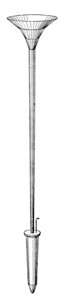
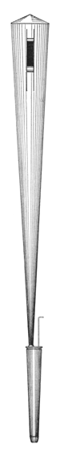
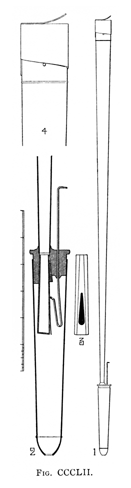

|
French Horn English Corno Italian Horn English, German |
Cor d'Orchestre French Orchestral Horn English |
|
While these names suggest a stop imitative of the modern orchestral or �French� horn, their meanings are often different. According to Williams, in the 16th century the names Horn and Hoorn frequently indicated a Cornet mixture, especially in the Netherlands and northern France. Audsley gives us the first known citation of an organ stop named French Horn, in a 1724 instrument by Renatus Harris at �St. Dionis Backchurch�. Audsley also reports that the orchestral horn was first used in England in 1720. Other sources, however, point out that Harris's horns stops, as well as those of his contemporary Bridge, were of trumpet quality, though slightly muffled. Indeed, it was not until the mid-1700's that the technique of �stopping� a horn with the hand was developed, and with it the characteristic muffled and mournful tone of the French horn. Furthermore, this technique was developed as a means of obtaining notes between the harmonics on a natural (valveless) horn. Valves were not invented until around 1815. Thus, it was not until the 19th century that organ-builders began attempting to imitate the sound of the �stopped� orchestral horn, and these attempts did not achieve much success until the beginning of the twentieth century. Prior to the 19th century, horn tone meant �open� horn tone rather than �stopped� horn tone. This tone is represented in the organ by the Waldhorn. A few noteworthy examples are worth examining in detail. Bonavia-Hunt, writing in the early 1920's, tells us: Originally the attempt had been made by Mr. John Compton and others to develop the horn tone from oboe pipes fitted with excessively wide bells (about 6in. diameter at the top for the 1 ft. pipe). The great objection to the wide bell is the amount of soundboard space it occupies. The latest method is to voice an ordinary chorus reed (say 4 1/2 in. at CC, 8 ft.) on the close side on heavy pressure (from 12 in. upwards), employing double length (harmonic) pipes from tenor F up, with relatively thick tongues weighted fairly high up the scale, and �filled-in� shallots. The chief difficulty associated with close reed voicing is the tendency of the reed to �choke�, during which phenomenon the octave note below is heard along with the unison. By increasing the thickness of the tongue and fitting a baffle to the head of the shallot (a device introduced by Vincent Willis), this defect can be obviated. Wedgwood provides a drawing of Compton's French Horn, the topmost illustration reproduced here. He gives the dimensions of treble C as 2' 3" long, and 6" across the bell. Audsley writes of two other examples:
Audsley provides a drawing of Skinner's Horn, which is reproduced in the lowermost illustration given here. This was by no means Skinner's last word on the subject. Skinner himself writes:
The French Horn of the theatre organ seems not to have differed dramatically from that of the classical organ. It was, according to Strony, included only on larger instruments, the best examples being by Skinner and Kimball. Strony also comments that (unusually for the theatre organ) it is best used without tremulant. Horn is also a synonym for Hörnli, and Corno is also a synonym for Cornetto. See also Muted Horn. VariantsEcho HornOctave Horn Waldhorn |

  |
Osiris contains 94 examples of French Horn, 46 examples of Horn (two of which are mixtures), 12 examples of Corno, 4 examples of Orchestral Horn, and 2 examples of Cor d'Orchestre.
Horn 8', Swell; St. Mary the Virgin, Finedon, Northamptonshire, England; Schrider 1717. This stop may have been a later addition.
Orchestral Horn 8', Choir; Irvine Auditorium, Philadelphia, Pennsylvania, USA; Austin 1926.
Orchestral Horn 8', Solo; St. Matthew's Lutheran Church, Hanover, Pennsylvania, USA; Austin 1925-82.
Orchestral Horn 8', Solo; The Royal Hospital School, Holbrook, England; Hill, Norman & Beard 1933.
Orchestral Horn 8', Solo; Norwich Cathedral, Norfolk, England; Hill, Norman & Beard 1941.
Cor d'Orchestre 8', Gallery Organ IV; Convention Hall, Atlantic City, New Jersey, USA; Midmer-Losh.
Cor d'Orchestre 8', Solo; First Baptist Church, Winston-Salem, North Carolina, USA; Moller 1969.
Corno 4', Nebenwerk; Votivkirche, Vienna, Austria; Walcker 1878. This is the earliest known example of this name.
Corno 4', Pedal; Domes St. Maria, Riga, Latvia; Walcker 1883.
See the Sound Files appendix for general information.
| French Horn 8', Solo | Kellogg Auditorium, Battle Creek, Michigan, USA | Aeolian-Skinner, 1933 | St. Anne |
|
Original website compiled by Edward L. Stauff. For educational use only. FrenchHorn.html - Last updated 17 May 2008. |
Home Full Index |
{kind=link}
{kind=link}
{kind=link}